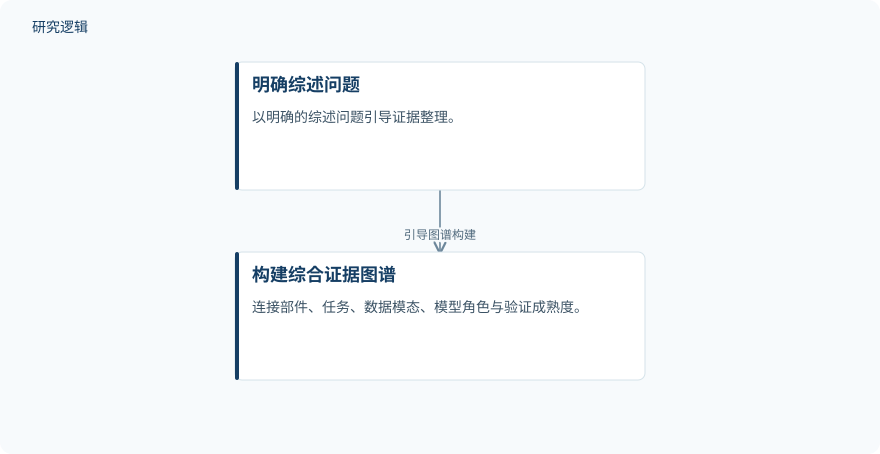

摘要解读
大语言模型用于风力机故障诊断：使能技术、部件级应用与未来展望综述
Large Language Models for Wind Turbine Fault Diagnosis: A Review of Enabling Technologies, Component-Level Applications, and Future Perspectives
解读更新 2026-10-31 21:43 · 依据公开摘要整理，未核验全文细节
大语言模型能否用于风机故障诊断，关键不只是能否生成答案，而是答案背后具有什么证据。这篇综述梳理不同部件、任务与模型角色，帮助读者区分“能够辅助某个环节”与“已具备可部署的诊断能力”。
文章目录
风机诊断需要的不只是语言答案
风机故障诊断需要在变化的运行工况下，将异构测量数据与工程知识结合起来。大语言模型正被探索用于数值诊断、巡检解读和诊断决策支持，但这些任务并不共享同一套证据要求。理解它们各自承担什么角色，是判断工具价值的前提。
用证据图谱连接部件、任务与验证成熟度
本文是一篇结构化叙述性综述，覆盖轮毂与叶片、齿轮箱、轴承和发电机的相关使能技术及部件级应用。作者以明确的综述问题引导综合证据图谱，将部件、任务、数据模态、模型角色和验证成熟度联系起来。
在单项研究的梳理中，综述区分直接研究证据、相关领域演示以及拟议实施路径。这种组织方式保留了证据来源与成熟程度的差别，避免把尚处于构想阶段的应用与已经报告的研究结果混为一谈。
依据摘要整理的证据图谱构建示意


仅展示摘要明确陈述的综述问题与证据图谱之间的关系，不代表论文原图或具体实验流程。
下载 SVG图示关系说明
实线表示相邻阶段的信息流，虚线表示跨阶段联系或反馈。
明确综述问题 → 构建综合证据图谱：引导图谱构建
不同任务的成绩不能兑换成同一种诊断能力
摘要报告的核心比较结论是：特征选择、适配后的数值预测、知识检索和报告生成，其结果不能被视为可相互替代的诊断能力。完成一个辅助任务，不等于证明整个故障诊断流程可靠。阅读相关成果时，需要先确认模型究竟完成了哪类任务。
综述还讨论了未成功的检索配置、可能存在的时间泄漏、未经验证的解释，以及现场数据回顾性评估与实际运行部署之间的差距。这些是文中讨论的风险与证据缺口，并不意味着所有被综述的方法都存在同样问题。
摘要不足以判定具体方法的部署水平
仅凭摘要，无法判断纳入研究的数量、样本规模、数据来源与工况覆盖，也无法核对具体模型、比较基线、评价指标及验证划分。摘要未给出各类方法的量化结果，因此不能据此排序模型性能，或断言某种方案已经适用于现场部署。
摘要提到将相关不确定性与匹配的消融比较、验证及前瞻性现场研究相联系，但没有提供这些工作的具体实施与结果。这属于综述提出的研究方向，不能解读为作者已经完成了相应验证。
阅读启发：先辨认模型角色，再追问证据
阅读启发：面向智能运维应用，可沿着本文的证据图谱继续追问：模型处理的是数值数据、巡检内容还是知识检索？结论来自风机领域的直接证据，还是相关领域演示？解释是否经过验证，回顾性结果又如何支撑运行部署？这些问题比笼统询问“大模型是否有效”更有助于理解研究边界。
以上为本站阅读启发与建议，不是论文已验证的结论。